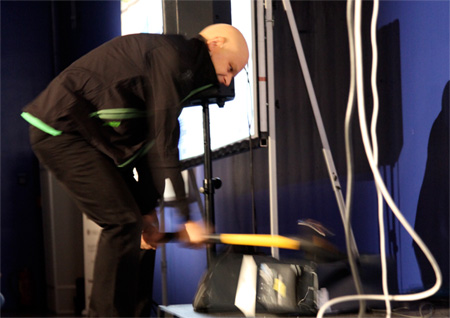

Amok på IT-konferanse
Foran øynene på flere hundre tilskuere gikk Rhino Thue amok på JavaZone. Overraskelsen var stor da Thue løste et angitt virusproblem på sin egen måte.

Det var under foredraget ” En praktisk guide til høytsvevende arkitekturer” det skjedde. Under demonstrasjon av cloud computing, der det ble demonstrert sammenkobling av seks maskiner, kommer Rhino Thue overraskende til syne. Han er sterkt opprørt og kan fortelle at en av maskinene, nærmere bestemt maskin nummer to, er befengt med virus. Sindige programmerere som var tilstede i salen reagerte ikke så sterkt på det, virusangrep er noe man er vant med, og stort sett er i stand til å takle.
Thune med egen løsning
Men Rhino Thue var tilsynelatende av en annen mening. Han dro først ut ledningen, deretter koblingen til de andre maskinene, og som ikke dette var nok, grep han fatt i en slegge som han tydeligvis hadde fått med seg - og knuste den virusbefengte maskinen under mottoet ”angrep er det beste forsvar”.
Ikke alle er fortrolig med denne måten å løse virusproblemet på, selv om den må betraktes som effektiv.
Kl. 13.00 i dag er det proklamert et foredrag om SOA i sal 6, med Dag Bryhn, som det også knytter seg atskillig spenning til. Følg med!
Scandinavias biggest developer conference